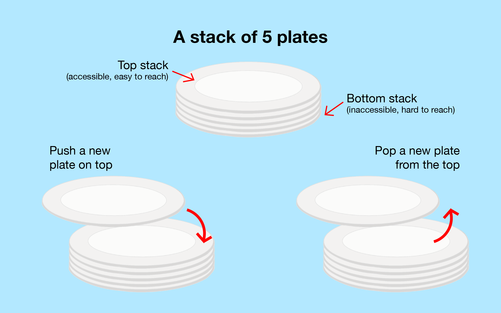
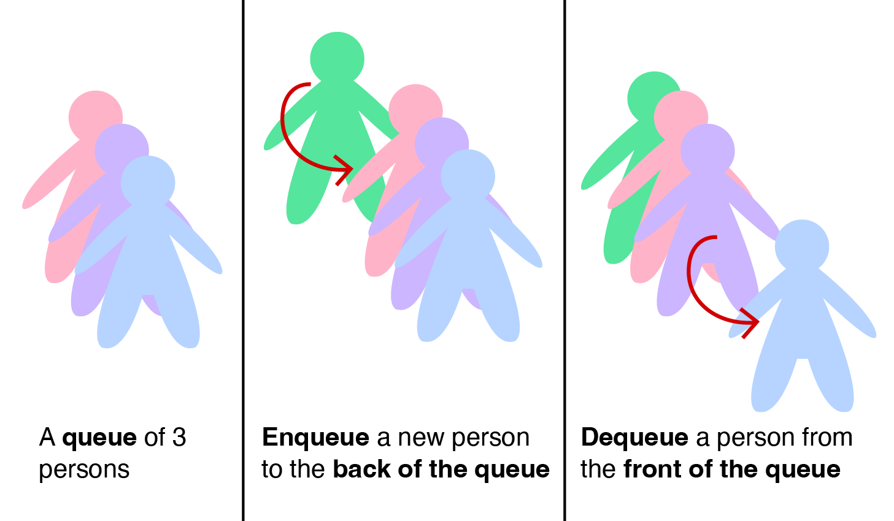

Linked List is a data structure consisting of a group of vertices (nodes) which together represent a sequence. Under the simplest form, each vertex is composed of a data and a reference (link) to the next vertex in the sequence. Try clicking for a sample animation on searching a value in a (Singly) Linked List.
Linked List and its variations are used as underlying data structure to implement List, Stack, Queue, and Deque ADTs (read this Wikipedia article about ADT if you are not familiar with that term).
In this visualization, we discuss (Singly) Linked List (LL) — with a single next pointer — and its two variants: Stack and Queue, and also Doubly Linked List (DLL) — with both next and previous pointers — and its variant: Deque.
Remarks: By default, we show e-Lecture Mode for first time (or non logged-in) visitor.
If you are an NUS student and a repeat visitor, please login.
We decide to group five related modes involving Linked List (LL, Stack, Queue, DLL, Deque) in one single visualization page. To facilitate more diversity, we randomize the selected mode upon loading this direct URL: https://visualgo.net/en/list.
However, you can use the following URL shortcuts to access individual mode directly (only works for logged-in users who have cleared reading all 3 sectors of these lecture notes):
- https://visualgo.net/en/ll,
- https://visualgo.net/en/stack,
- https://visualgo.net/en/queue,
- https://visualgo.net/en/dll,
- https://visualgo.net/en/deque.
Pro-tip 1: Since you are not logged-in, you may be a first time visitor (or not an NUS student) who are not aware of the following keyboard shortcuts to navigate this e-Lecture mode: [PageDown]/[PageUp] to go to the next/previous slide, respectively, (and if the drop-down box is highlighted, you can also use [→ or ↓/← or ↑] to do the same),and [Esc] to toggle between this e-Lecture mode and exploration mode.
Linked List data structure is commonly taught in Computer Science (CS) undergraduate courses for a few reasons:
- It is a simple linear data structure,
- It has a range of potential applications as a list ADT e.g., student list, event list, appointment list, etc (albeit there are other more advanced data structures that can do the same (and more) applications better) or as stack/queue/deque ADTs,
- It has interesting corner/special cases to illustrate the need for a good implementation of a data structure,
- It has various customization options and thus usually this Linked List data structure is taught using Object-Oriented Programming (OOP) way.
Pro-tip 2: We designed this visualization and this e-Lecture mode to look good on 1366x768 resolution or larger (typical modern laptop resolution in 2021). We recommend using Google Chrome to access VisuAlgo. Go to full screen mode (F11) to enjoy this setup. However, you can use zoom-in (Ctrl +) or zoom-out (Ctrl -) to calibrate this.
List is a sequence of items/data where positional order matter {a0, a1, ..., aN-2, aN-1}.
Common List ADT operations are:
- get(i) — maybe a trivial operation, return ai (0-based indexing),
- search(v) — decide if item/data v exists (and report its position/index)
or not exist (and usually report a non existing index -1) in the list, - insert(i, v) — insert item/data v specifically at position/index i in the list, potentially shifting the items from previous positions: [i..N-1] by one position to their right to make a space,
- remove(i) — remove item that is specifically at position/index i in the list, potentially shifting the items from previous positions: [i+1..N-1] by one position to their left to close the gap.
Discussion 1: What if we want to remove item with specific value v in the list?
Discussion 2: Can a List ADT contains duplicate items, i.e., ai = aj where i ≠ j?
Pro-tip 3: Other than using the typical media UI at the bottom of the page, you can also control the animation playback using keyboard shortcuts (in Exploration Mode): Spacebar to play/pause/replay the animation, ←/→ to step the animation backwards/forwards, respectively, and -/+ to decrease/increase the animation speed, respectively.
The content of this interesting slide (the answer of the usually intriguing discussion point from the earlier slide) is hidden and only available for legitimate CS lecturer worldwide. This mechanism is used in the various flipped classrooms in NUS.
If you are really a CS lecturer (or an IT teacher) (outside of NUS) and are interested to know the answers, please drop an email to stevenhalim at gmail dot com (show your University staff profile/relevant proof to Steven) for Steven to manually activate this CS lecturer-only feature for you.
FAQ: This feature will NOT be given to anyone else who is not a CS lecturer.
(Compact) Array is a good candidate for implementing the List ADT as it is a simple construct to handle a collection of items.
When we say compact array, we mean an array that has no gap, i.e., if there are N items in the array (that has size M, where M ≥ N), then only index [0..N-1] are occupied and other indices [N..M-1] should remain empty.

Let the compact array name be A with index [0..N-1] occupied with the items of the list.
get(i), just return A[i].
This simple operation will be unnecessarily complicated if the array is not compact.
search(v), we check each index i ∈ [0..N-1] one by one to see if A[i] == v.
This is because v (if it exists) can be anywhere in index [0..N-1].
Since this visualization only accept distinct items, v can only be found at most once.
In a general List ADT, we may want to have search(v) returns a list of indices.
insert(i, v), we shift items ∈ [i..N-1] to [i+1..N] (from backwards) and set A[i] = v.
This is so that v is inserted correctly at index i and maintain compactness.
remove(i), we shift items ∈ [i+1..N-1] to [i..N-2], overwriting the old A[i].
This is to maintain compactness.
get(i) is very fast: Just one access, O(1).
Another CS module: 'Computer Organisation' discusses the details on this O(1)
performance of this array indexing operation.
search(v)
In the best case, v is found at the first position, O(1).
In the worst case, v is not found in the list and we require O(N) scan to determine that.
insert(i, v)
In the best case, insert at i = N, there is no shifting of element, O(1).
In the worst case, insert at i = 0, we shift all N elements, O(N).
remove(i)
In the best case, remove at i = N-1, there is no shifting of element, O(1).
In the worst case, remove at i = 0, we shift all N elements, O(N).
The size of the compact array M is not infinite, but a finite number. This poses a problem as the maximum size may not be known in advance in many applications.
If M is too big, then the unused spaces are wasted.
If M is too small, then we will run out of space easily.
Solution: Make M a variable. So when the array is full, we create a larger array (usually two times larger) and move the elements from the old array to the new array. Thus, there is no more limits on size other than the (usually large) physical computer memory size.
C++ STL std::vector, Python list, Java Vector, or Java ArrayList all implement this variable-size array. Note that Python list and Java ArrayList are not Linked Lists, but are actually variable-size arrays.
However, the classic array-based issues of space wastage and copying/shifting items overhead are still problematic.
For fixed-size collections with known max limit of number of items that will ever be needed, i.e., the max size of M, then array is already a reasonably good data structure for List ADT implementation.
For variable-size collections with unknown size M and where dynamic operations such as insert/remove are common, a simple array is actually a poor choice of data structure.
For such applications, there are better data structures. Let's read on...
We now introduce the Linked List data structure. It uses pointers/references to allow items/data to be non-contiguous in memory (that is the main difference with a simple array). The items are ordered from index 0 to index N-1 by associating item i with its neighbour item i+1 through a pointer.

In its basic form, a single vertex (node) in the Linked List has this rough structure:
struct Vertex { // we can use either C struct or C++/Python/Java class
int item; // the data is stored here, an integer in this example
Vertex* next; // this pointer tells us where is the next vertex
};Using the default example Linked List [22 (head)->2->77->6->43->76->89 (tail)] for illustration, we have:
a0 with its item = 22 and its next = a1,
a1 with its item = 2 and its next = a2,
...
a6 with its item = 89 and its next = null.
Discussion: Which one is better for a C++ implementation of Linked List? struct or class? How about Python or Java implementation?
The content of this interesting slide (the answer of the usually intriguing discussion point from the earlier slide) is hidden and only available for legitimate CS lecturer worldwide. This mechanism is used in the various flipped classrooms in NUS.
If you are really a CS lecturer (or an IT teacher) (outside of NUS) and are interested to know the answers, please drop an email to stevenhalim at gmail dot com (show your University staff profile/relevant proof to Steven) for Steven to manually activate this CS lecturer-only feature for you.
FAQ: This feature will NOT be given to anyone else who is not a CS lecturer.
We also have a few additional data that we remember in this Linked List data structure. We use the default example Linked List [22 (head)->2->77->6->43->76->89 (tail)] for illustration.
- The head pointer points to a0 — it is 22, nothing points to the head item,
- The current number of elements N in the Linked List — N = 7 elements.
- The tail pointer points to aN-1 — it is a6 = 89, nothing is after the tail item.
That's it, we only add three more extra variables in data structure.
Note that there are various subtle differences found in many Computer Science textbooks on how to implement a (Singly) Linked List e.g., use tail pointer or not, circular or not, use dummy head item or not, allow duplicate items or not — see this slide.
Our version in this visualization (with tail pointer, not circular, without dummy head, disallow duplicate) may not be 100% the same compared to what you learn in your class but the basic ideas should remain the same.
In this visualization, each vertex has Integer item, but this can easily be changed to any other data type as needed.
Since we only keep the head and tail pointers, list traversal subroutine is needed to reach positions other than the head (index 0) and the tail (index N-1).
As this sub-routine is so frequently used, we will abstract it out as a function. The code below is written in C++.
Vertex* Get(int i) { // returns the vertex
Vertex* ptr = head; // we have to start from head
for (int k = 0; k < i; ++k) // advance forward i time(s)
ptr = ptr->next; // the pointers are pointing to the higher index
return ptr;
}It runs in O(N) as i can be as big as index N-2.
Compare this with array where we can access index i in O(1) time.
As we only have direct reference to the first head item and the last tail item, plus the pointers are pointing to the right (higher position/index), we can only access the rest by starting from the head item and hopping through the next pointers. On the default [22 (head)->2->77->6->43->76->89 (tail)], we have:
— found in the example above at position/index 2 (0-based indexing).
— not found in the example above, and this is only known after all N items are examined, so Search(v) has O(N) worst case time complexity.
There are more cases than array version due to the nature of Linked List.
Most CS students who learn Linked List for the first time usually are not aware of all cases until they figure it out themselves when their Linked List code fail.
In this e-Lecture, we directly elaborate all cases.
For insert(i, v), there are four (legal) possibilities, i.e., item v is added to:
- The head (before the current first item) of the linked list, i = 0,
- An empty linked list (which fortunately similar to the previous case),
- The position beyond the last (the current tail) item of the linked list, i = N,
- The other positions of the linked list, i = [1..N-1].
The (C++) code for insertion at head is simple and efficient, in O(1):
Vertex* vtx = new Vertex(); // create new vertex vtx from item v
vtx->item = v;
vtx->next = head; // link this new vertex to the (old) head vertex
head = vtx; // the new vertex becomes the new head
Try , which is insert(0, 50), on the example Linked List [22 (head)->2->77->6->43->76->89 (tail)].
Discussion: What happen if we use array implementation for insertion at head of the list?
The content of this interesting slide (the answer of the usually intriguing discussion point from the earlier slide) is hidden and only available for legitimate CS lecturer worldwide. This mechanism is used in the various flipped classrooms in NUS.
If you are really a CS lecturer (or an IT teacher) (outside of NUS) and are interested to know the answers, please drop an email to stevenhalim at gmail dot com (show your University staff profile/relevant proof to Steven) for Steven to manually activate this CS lecturer-only feature for you.
FAQ: This feature will NOT be given to anyone else who is not a CS lecturer.
Empty data structure is a common corner/special case that can often cause unexpected crash if not properly tested. It is legal to insert a new item into a currently empty list, i.e., at index i = 0. Fortunately, the same pseudo-code for insertion at head also works for an empty list so we can just use the same code as in this slide (with one minor change, we also need to set tail = head).
Try , which is insert(0, 50), but on the empty Linked List [].
With the Linked List traversal Get(i) sub-routine, we can now implement insertion in the middle of the Linked List as follows (in C++):
Vertex* pre = Get(i-1); // traverse to (i-1)-th vertex, O(N)
aft = pre->next; // aft cannot be null, think about it
Vertex* vtx = new Vertex(); // create new vertex
vtx->item = v;
vtx->next = aft; // link this
pre->next = vtx; // and this
Try on the example Linked List [22 (head)->2->77->6->43->76->89 (tail)].
Also try on the same example Linked List. This is a corner case: Insert at the position of tail item, shifting the tail to one position to its right.
This operation is slow, O(N), due to the need for traversing the list (e.g. if i close to N-1).
If we also remember the tail pointer as with the implementation in this e-Lecture (which is advisable as it is just one additional pointer variable), we can perform insertion beyond the tail item (at i = N) efficiently, in O(1):
Vertex* vtx = new Vertex(); // this is also a C++ code
vtx->item = v; // create new vertex vtx from item v
tail->next = vtx; // just link this, as tail is the i = (N-1)-th item
tail = vtx; // now update the tail pointer
Try , which is insert(7, 10), on the example Linked List [22 (head)->2->77->6->43->76->89 (tail)] . A common misconception is to say that this is insertion at tail. Insertion at tail element is insert(N-1, v). Insertion beyond the tail is insert(N, v).
Discussion: What happen if we use array implementation for insertion beyond the tail of the list?
The content of this interesting slide (the answer of the usually intriguing discussion point from the earlier slide) is hidden and only available for legitimate CS lecturer worldwide. This mechanism is used in the various flipped classrooms in NUS.
If you are really a CS lecturer (or an IT teacher) (outside of NUS) and are interested to know the answers, please drop an email to stevenhalim at gmail dot com (show your University staff profile/relevant proof to Steven) for Steven to manually activate this CS lecturer-only feature for you.
FAQ: This feature will NOT be given to anyone else who is not a CS lecturer.
For remove(i), there are three (legal) possibilities, i.e., index i is:
- The head (the current first item) of the linked list, i = 0, it affects the head pointer
- The tail of the linked list, i = N-1, it affects the tail pointer
- The other positions of the linked list, i = [1..N-2].
Discussion: Compare this slide with Insertion Cases slide to realize the subtle differences. Is removing anything from an already empty Linked List considered 'legal'?
This case is straightforward (written in C++):
if (head == NULL) return; // avoid crashing when SLL is empty
Vertex* tmp = head; // so we can delete it later
head = head->next; // book keeping, update the head pointer
delete tmp; // which is the old head
Try repeatedly on the (shorter) example Linked List [22 (head)->2->77->6 (tail)]. It will continuously working correctly up until the Linked List contains one item where the head = the tail item. We prevent execution if the LL is already empty as it is an illegal case.
Discussion: What happen if we use array implementation for removal of head of the list?
The content of this interesting slide (the answer of the usually intriguing discussion point from the earlier slide) is hidden and only available for legitimate CS lecturer worldwide. This mechanism is used in the various flipped classrooms in NUS.
If you are really a CS lecturer (or an IT teacher) (outside of NUS) and are interested to know the answers, please drop an email to stevenhalim at gmail dot com (show your University staff profile/relevant proof to Steven) for Steven to manually activate this CS lecturer-only feature for you.
FAQ: This feature will NOT be given to anyone else who is not a CS lecturer.
With the Linked List traversal Get(i) sub-routine (discussed earlier), we can now implement removal of the middle item of the Linked List as follows (in C++):
Vertex* pre = Get(i-1); // traverse to (i-1)-th vertex, O(N)
Vertex* del = pre->next, aft = del->next;
pre->next = aft; // bypass del
delete del;
Try , the element at index N-2 (as N = 7 in the example [22 (head)->2->77->6->43->76->89 (tail)] .
This is the worst O(N) case on the example above.
Note that Remove(N-1) is removal at tail that requires us to update the tail pointer, see the next case.
We can implement the removal of the tail of the Linked List as follows, assuming that the Linked List has more than 1 item (in C++):
Vertex* pre = head;
tmp = head->next;
while (tmp->next != null) // while my neighbor is not the tail
pre = pre->next, tmp = tmp->next;
pre->next = null;
delete tmp; // tmp = (old) tail
tail = pre; // update tail pointer
Try repeatedly on the (shorter) example Linked List [22 (head)->2->77->6 (tail)]. It will continuously working correctly up until the Linked List contains one item where the head = the tail item and we switch to removal at head case. We prevent execution if the LL is already empty as it is an illegal case.
Actually, if we also maintain the size of the Linked List N (compare with this slide), we can use the Linked List traversal sub-routine Get(i) to implement the removal of the tail of the Linked List this way (in C++):
Vertex* pre = Get(N-2); // go to one index just before tail, O(N)
pre->next = null;
delete tail;
tail = pre; // we have access to old tail
Notice that this operation is slow, O(N), just because of the need to update the tail pointer from item N-1 backwards by one unit to item N-2 so that future insertion after tail remains correct... This deficiency will be later addressed in Doubly Linked List variant.
Discussion: What happen if we use array implementation for removal of tail of the list?
The content of this interesting slide (the answer of the usually intriguing discussion point from the earlier slide) is hidden and only available for legitimate CS lecturer worldwide. This mechanism is used in the various flipped classrooms in NUS.
If you are really a CS lecturer (or an IT teacher) (outside of NUS) and are interested to know the answers, please drop an email to stevenhalim at gmail dot com (show your University staff profile/relevant proof to Steven) for Steven to manually activate this CS lecturer-only feature for you.
FAQ: This feature will NOT be given to anyone else who is not a CS lecturer.
get(i) is slow: O(N).
In Linked List, we need to perform sequential access from head element.
search(v)
In the best case, v is found at the first position, O(1).
In the worst case, v is not found in the list and we require O(N) scan to determine that.
insert(i, v)
In the best case, insert at i = 0 or at i = N, head and tail pointers help, O(1).
In the worst case, insert at i = N-1, we need to find the item N-2 just before the tail, O(N).
remove(i)
In the best case, remove at i = 0, head pointer helps, O(1).
In the worst case, remove at i = N-1, due to the need to update the tail pointer, O(N).
Pure (Singly) Linked List applications are surprisingly rare as the simpler resizeable compact array (vector) can do the job better, compare the Linked List version with the compact array version.
However, the basic concept of Linked List that allows the vertices to be non-contiguous in memory makes it an excellent resize-able data structure for the next two other Abstract Data Types: Stack and Queue.
Stack is a particular kind of Abstract Data Type in which the main operations on the collection are the addition of an item to the collection, known as push, only to the top of the stack and removal of an item, known as pop, only from the top of the stack.
It is known as Last-In-First-Out (LIFO) data structure, e.g., the stack of book below.

In most implementations and also in this visualization, Stack is basically a protected (Singly) Linked List where we can only peek at the head item, push a new item only to the head (insert at head), e.g., try , and pop existing item only from the head (remove from head), e.g., try . All operations are O(1).
In this visualization, we orientate the (Single) Linked List top down, with the head/tail item at the top/bottom, respectively. In the example, we have [2 (top/head)->7->5->3->1->9 (bottom/tail)]. Due to vertical screen size limit (in landscape mode), we only allow a Stack of at most 7 items in this visualization.
Discussion: Can we use vector, a resizeable array, to implement Stack ADT efficiently?
The content of this interesting slide (the answer of the usually intriguing discussion point from the earlier slide) is hidden and only available for legitimate CS lecturer worldwide. This mechanism is used in the various flipped classrooms in NUS.
If you are really a CS lecturer (or an IT teacher) (outside of NUS) and are interested to know the answers, please drop an email to stevenhalim at gmail dot com (show your University staff profile/relevant proof to Steven) for Steven to manually activate this CS lecturer-only feature for you.
FAQ: This feature will NOT be given to anyone else who is not a CS lecturer.
Stack has a few popular textbook applications. Some examples:
- Bracket Matching,
- Postfix Calculator,
- A few other interesting applications that are not shown for pedagogical purposes.
Mathematical expression can get quite convoluted, e.g., {[x+2]^(2+5)-2}*(y+5).
Bracket Matching problem is a problem of checking whether all brackets in the given input are matched correctly, i.e., ( with ), [ with ] and { with }, and so on.
Bracket Matching is equally useful for checking the legality of a source code.
Discussion: It turns out that we can use Stack's LIFO behavior to solve this problem.
The question is how?
The content of this interesting slide (the answer of the usually intriguing discussion point from the earlier slide) is hidden and only available for legitimate CS lecturer worldwide. This mechanism is used in the various flipped classrooms in NUS.
If you are really a CS lecturer (or an IT teacher) (outside of NUS) and are interested to know the answers, please drop an email to stevenhalim at gmail dot com (show your University staff profile/relevant proof to Steven) for Steven to manually activate this CS lecturer-only feature for you.
FAQ: This feature will NOT be given to anyone else who is not a CS lecturer.
Postfix expression is a mathematical expression in: operand1 operand2 operator format which is different from what human is most comfortable at, the Infix expression: operand1 operator operand2.
For example, expression 2 3 + 4 * is the Postfix version of (2+3)*4.
In Postfix expression, we do not need brackets.
Discussion: It turns out that we can also use Stack to solve this problem efficiently.
The question is how?
The content of this interesting slide (the answer of the usually intriguing discussion point from the earlier slide) is hidden and only available for legitimate CS lecturer worldwide. This mechanism is used in the various flipped classrooms in NUS.
If you are really a CS lecturer (or an IT teacher) (outside of NUS) and are interested to know the answers, please drop an email to stevenhalim at gmail dot com (show your University staff profile/relevant proof to Steven) for Steven to manually activate this CS lecturer-only feature for you.
FAQ: This feature will NOT be given to anyone else who is not a CS lecturer.
Queue is another Abstract Data Type in which the items in the collection are kept in order and the main operations on the collection are the addition of items to the back position (enqueue) and removal of items from the front position (dequeue).
It is known as First-In-First-Out (FIFO) data structure as the first item to be enqueued will eventually be the first item to be dequeued, as in real life queues (see below).

If we simply use the compact array implementation for this Queue ADT with a0 is the front of the queue and aN-1 is the back of the queue, we will encounter major performance issue with the dequeue operation.
This is because insertion at the back of a compact array is fast, O(1), but removal at the front of a compact array is slow due to the need to shift items, please review this slide.
Another possible array implementation is to avoid that shifting of items during dequeue operation by having two indices: front (the index of the queue front-most item, increased after a dequeue operation) and back (the index of the queue back-most item, also increased after an enqueue operation).
Suppose we use an array of size M = 8 items and the content of our queue is as follows: [(2,4,1,7),-,-,-,-] with front = 0 (underlined) and back = 3 (italic). The current active queue elements are highlighted with (green color).
If we call dequeue(), we have [-,(4,1,7),-,-,-,-], front = 0+1 = 1, and back = 3.
If we call enqueue(5), we have [-,(4,1,7,5),-,-,-], front = 1, and back = 3+1 = 4.
However, many dequeue and enqueue operations later, we may have [-,-,-,-,-,6,2,3], front = 5, and back = 7. By now, we cannot enqueue anything else albeit we have many empty spaces at the front of the array.
If we allow both front and back indices to "wrap back" to index 0 when they have reached index M-1, we effectively make the array "circular" and we can use the empty spaces.
For example, if we call enqueue(8) next, we have [8),-,-,-,-,(6,2,3], front = 5, and back = (7+1)%8 = 0.
Yet, this does not solve the main problem of fixed-size array implementation. A few more enqueue operations later, we may have [8,10,11,12,13),(6,2,3], front = 5, and back = 4. At this point (front = (back+1) % M)), we cannot enqueue anything else.
Do note that if we know that our queue size will never exceed the fixed array size M, then the circular array idea is actually already a good way to implement Queue ADT.
However, if we do not know the upper bound of queue size, we can enlarge (double) the size of the array, e.g., make M = 2*8 = 16 (two-times larger), but that will entail re-copying the items from index front to back in a slow (but rare) O(N) process to have [(6,2,3,8,10,11,12,13),-,-,-,-,-,-,-,-,], front = 0, and back = 7.
PS1: If you understand amortized analysis, this heavy O(N) cost when the circular array is full can actually be spread out so that each enqueue remains O(1) in amortized sense.
PS2: There is an alternative way to implement an efficient Queue using two Stacks. How?
The content of this interesting slide (the answer of the usually intriguing discussion point from the earlier slide) is hidden and only available for legitimate CS lecturer worldwide. This mechanism is used in the various flipped classrooms in NUS.
If you are really a CS lecturer (or an IT teacher) (outside of NUS) and are interested to know the answers, please drop an email to stevenhalim at gmail dot com (show your University staff profile/relevant proof to Steven) for Steven to manually activate this CS lecturer-only feature for you.
FAQ: This feature will NOT be given to anyone else who is not a CS lecturer.
If we do not really know the the upper bound of queue size, then Singly Linked List (SLL) can be a good data structure to implement Queue ADT.
Recall that in a Queue, we only need the two extreme ends of the List, one for insertion (enqueue) only and one for removal (dequeue) only.
If we review this slide, we see that insertion after tail and removal from head in a Singly Linked List are fast, i.e., O(1). Thus, we designate the head/tail of the Singly Linked List as the front/back of the queue, respectively. Then, as the items in a Linked List are not stored contiguously in computer memory, our Linked List can grow and shrink as needed.
In our visualization, Queue is basically a protected Singly Linked List where we can only peek at the head item, enqueue a new item to one position after the current tail, e.g., try , and dequeue existing item from the head, e.g., try (which is essentially a dequeue operation). All operations are O(1).
Queue ADT is usually used to simulate real queues.
One super important application of Queue ADT is inside the Breadth-First Search graph traversal algorithm.
Doubly Linked List (DLL) is 99% the same as its Singly Linked List version. The main difference is that now each vertex contains two pointers. The next pointer is the same as in Singly Linked List version in which it links item ai with the next item ai+1, if exists. The additional prev pointer also links item ai with the previous item ai-1, if exists.
The usage of prev pointers makes it possible to move/iterate backwards at the expense of two-times memory usage requirement as now each vertex records one additional pointer. The positive side effect of this ability to move backwards is now we can address the weak removal at tail case of the Singly Linked List.
In this visualization, notice that the edges in Doubly Linked List (and later Deque) are undirected (bidirectional) edges.
The main problem of removal of the tail element in the Singly Linked List, even if we have direct access to the tail item via the tail pointer, is that we then have to update the tail pointer to point to one item just before the tail after such removal.
With Doubly Linked List ability to move backwards, we can find this item before the tail via tail->prev... Thus, we can implement removal of tail this way (in C++):
Vertex* tmp = tail; // remember tail item
tail = tail->prev; // the key step to achieve O(1) performance :O
tail->next = null; // remove this dangling reference
delete tmp; // remove the old tail
Now this operation is O(1). Try on example DLL [22 (head)<->2<->77<->6<->43<->76<->89 (tail)].
As we have one more pointer prev for each vertex, their values need to be updated too during each insertion or removal. Try all these operations on example DLL [22 (head)<->2<->77<->6<->43<->76<->89 (tail)].
Try — additional step: 22's prev pointer points to new head 50.
Try — additional step: 10's prev pointer points to old tail 89.
Try — additional step: 6's/44's prev pointers point to 44/77, respectively.
Try — set new head 2's prev pointer to null.
Try — set 89's prev pointer to 43.
Double-ended queue (often abbreviated to deque, pronounced deck) is an Abstract Data Type that generalizes a Queue, for which elements can be added to or removed only from either the front (head) or back (tail).
In our visualization, Deque is basically a protected Doubly Linked List where we can only:
search the head/tail item (peek front/back),
insert a new item to the head/tail (try or ), and
remove an existing item from the head/tail (try or ).
All operations are O(1).
Deque are used a few advanced applications, like finding the shortest paths 0/1-weighted graph using modified BFS, on some sliding window techniques, etc.
Create operation is the same for all five modes.
However there are minor differences for the search/insert/remove operations among the five modes.
For Stack, you can only peek/restricted-search, push/restricted-insert, and pop/restricted-remove from the top/head.
For Queue, you can only peek/restricted-search from the front (or sometimes, the back), push/restricted-insert from the back, and pop/restricted-remove from the front.
For Deque, you can peek/restricted-search, enqueue/restricted-insert, dequeue/restricted-remove from both front/back, but not from the middle.
Single (Singly) and Doubly Linked List do not have such restrictions.
We have reached the end of this e-Lecture.
But read ahead for a few extra challenges.
The following are the more advanced insights about Linked List:
- What happen if we don't store the tail pointer too?
- What if we use dummy head?
- What if the last tail item points back to the head item?
- What need to be changed to allow duplicate items (a more general List ADT)?
The content of this interesting slide (the answer of the usually intriguing discussion point from the earlier slide) is hidden and only available for legitimate CS lecturer worldwide. This mechanism is used in the various flipped classrooms in NUS.
If you are really a CS lecturer (or an IT teacher) (outside of NUS) and are interested to know the answers, please drop an email to stevenhalim at gmail dot com (show your University staff profile/relevant proof to Steven) for Steven to manually activate this CS lecturer-only feature for you.
FAQ: This feature will NOT be given to anyone else who is not a CS lecturer.
C++ STL:
forward_list (a Singly Linked List)
stack
queue
list (a Doubly Linked List)
deque (actually not using Doubly Linked List but another technique, see cppreference)
Java API:
LinkedList (already a Doubly Linked List)
Stack
Queue (actually an interface, usually implemented using LinkedList class)
Deque (actually an interface, usually implemented using LinkedList class)
For a few more interesting questions about this data structure, please practice on Linked List training module.
We also have a few programming problems that somewhat requires the usage of this Linked List, Stack, Queue, or Deque data structure:
UVa 11988 - Broken Keyboard (a.k.a. Beiju Text),
Kattis - backspace, and
Kattis - integerlists.
Try them to consolidate and improve your understanding about this data structure. You are allowed to use C++ STL, Python standard library, or Java API if that simplifies your implementation.
You have reached the last slide. Return to 'Exploration Mode' to start exploring!
Note that if you notice any bug in this visualization or if you want to request for a new visualization feature, do not hesitate to drop an email to the project leader: Dr Steven Halim via his email address: stevenhalim at gmail dot com.
Create(A)
Search
Insert
Remove